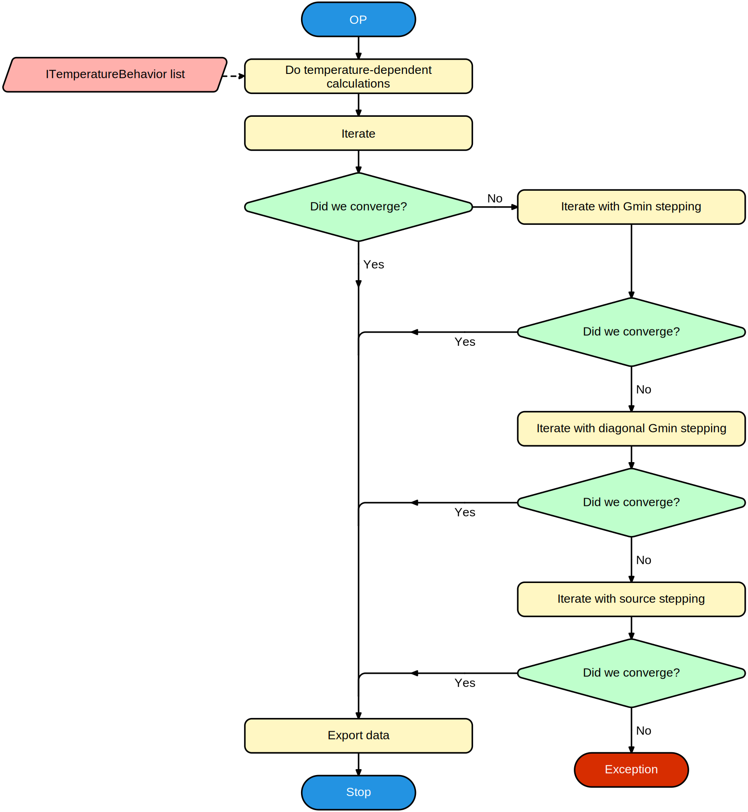

DC / Operating point analysis
Operating point calculations
The operating point of a circuit is the static solution to a a circuit, ie. all voltages and currents are assumed to be constant over time.

Calculating the operating point is often the first step in any simulation. First the temperature-dependent properties are calculated. Then the analysis will iterate to find a solution. Iterative solutions do not always guarantee convergence, so multiple schemes are provided to help convergence if the first attempt fails.
Gmin stepping
A common issue for convergence is exponential dependencies of a current on a voltage or vice-versa, like is often the case in diode-type structures (PN-junctions). The problem occurs because on one side of the exponential the curve is very horizontal, while on the other side it is almost vertical. This causes iterations to either over-step, or under-step when the current solution is too far from the real solution. By placing an additional resistive path in parallel to these problematic areas this issue can be alleviated. Usually a high Gmin allows the circuit to converge pretty quickly to a solution that is closer to the actual solution. This new solution can be used to iterate again with progressively smaller Gmin as the solution gets closer and closer to the actual solution.
Diagonal Gmin stepping
Diagonal Gmin stepping is almost identical to Gmin stepping, except that it will add a resistor to ground from each node in the circuit, not just for exponential curves. This translates to adding Gmin to each diagonal element of a voltage node in the Y-matrix - hence the name.
Source stepping
For source stepping, all independent sources are given a value of 0 volts or 0 amps. The solution should at that point be trivial (all voltages and currents will be very close to 0). By slowly ramping up all independent sources again, a solution can be found where the solution does not change as much from one step to the next.
DC analysis
A DC analysis is nothing more than a sequence of operating point analysis where one or more parameters are being swept.
Temperature-dependent calculations are executed only once at the start of the sweep.